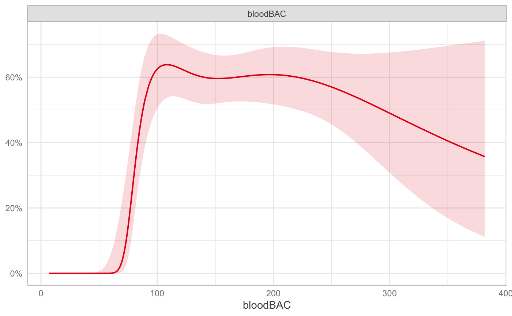
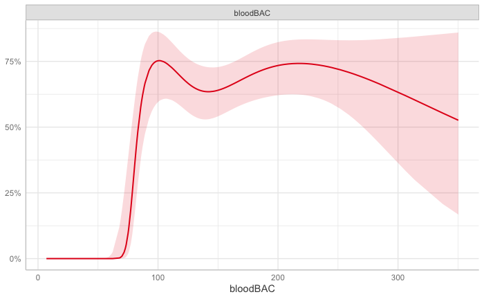
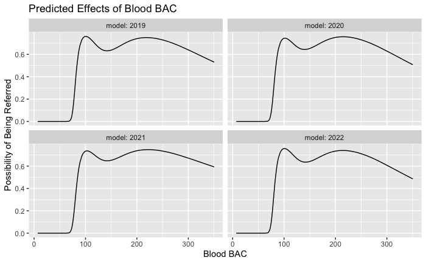
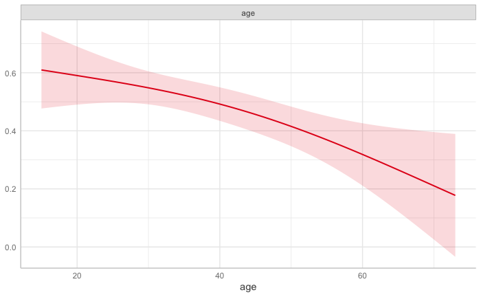
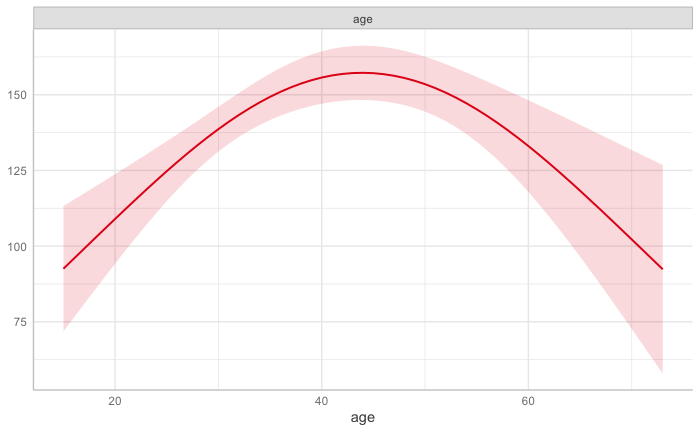

Abstract
This paper elucidates the complex realities of implementing ambitious top-down social governance legislation in China through an empirical examination of local-level drunk driving enforcement. When drunk driving was abruptly criminalized in 2011 with a stringent legal blood alcohol limit of 80mg/100ml, police agencies became overwhelmed, forcing pragmatic looseness in enforcement thresholds on the ground. Examination of traffic police data (2019-2022) in a district reveals officers applying rough blood alcohol thresholds around 100mg/100ml for prosecution referrals despite the formal limit; referral rates correlated negatively with work pressures; procedural biases arose, with youths facing higher prosecution likelihood than older offenders at equal intoxication levels; and, the definition of “motor vehicle” also evidenced situational instability, fluctuating in scope. While data constraints exist, this localized analysis helps unpack the “black box” of policy implementation in China. It reveals the difficulties transplanting ambitious governance goals crafted in Beijing to the vastly diverse contexts shaping enforcement realities nationwide. The study argues that effective social governance requires careful alignment of legislative ambitions with grassroots discretion and capacity.
1 Introduction
The scope of criminal law is expanding rapidly worldwide, with previously minor administrative infractions increasingly being recategorized as crimes subject to harsher punishments 1. This trend of overcriminalization raises critical questions about how street-level bureaucrats - particularly police officers - adapt their practices when faced with proliferating legal obligations amid limited resources. In parallel, China has increasingly turned to criminalization as a means of social governance, evident in initiatives like the criminalization of high-altitude littering (高空抛物入刑) and more. Despite this trend, there has been limited attention given to the challenges of putting ambitious laws into practice, particularly when they intersect with the constrained resources available for enforcement at the grassroots level. This paper delves into these intricacies by examining the case of China’s 2011 criminalization of drunk driving.
In 2011, China amended its Criminal Law to criminalize drunk driving as the crime of dangerous driving.2 This top-down policy mandated referring all offenders meeting the legislated 80mg/100mL blood alcohol concentration (BAC) threshold for prosecution, aiming to deter drunk driving through heightened penalties.3 As the Ministry of Public Security’s 2011 Guidelines stated, “those whose BAC meets the drunk driving standard after testing should uniformly be investigated for suspected dangerous driving...and case transfers should be handled appropriately... For those whom the prosecutor decides not to indict or the court acquits but clear evidence of drunk driving exists, administrative penalties should still be imposed per the law (emphasis added) 4.”
However, the number and proportion of dangerous driving crimes skyrocketed, becoming the most common crime in 2019 with 319,000 cases, accounting for 24.6% of all criminal cases of first instance 5. Massive caseloads and constrained police resources challenged full enforcement as per legal requirements. After all, referring cases for prosecution necessitates far more documentation than administrative penalties. Initially, Chinese procurators enforced near-universal prosecution as policy, but this stance relaxed after 2017 amidst spiking offences 6. Though procurators retain discretion over non-prosecution, police theoretically cannot dismiss charges independently. Yet unmanageable caseloads compelled certain unofficial relaxation of strict referral rules in practice, reflecting systemic strains in the Chinese criminal justice apparatus.
Exploring the nuanced dynamics of how Chinese law enforcement adapts its approach to the escalating number of cases is meaningful, particularly in the context of a mentality influenced by the directive of “concentrate our efforts to accomplish big tasks (集中力量办大事).7” This mindset may result in the periodic oversight of practical limitations when considering criminal justice policies in China. For instance, initiatives like the call for “all homicide cases must be solved (命案必破)8” may unwittingly place an overwhelming burden on grassroots personnel. This paper aims to delve into how frontline workers navigate these grand policy directives, utilizing their ingenuity to address challenges.
Whilst police workload has constituted an enduring research interest, predominant foci have encompassed elucidating correlations between workload and performance metrics like case clearance rates and operational intensity 9. Extant literature has acknowledged resultant behavioral adaptations under excessive demands, alongside highlighting the semi-autonomous entity status of police forces, empowering significant discretion outside formal oversight 10. However, an overlooked perspective requiring exploration is whether and how police quietly bend the law to manage overloads when ambitious new policies criminalize previously less-enforced offenses, especially in the Chinese context where the deeply-rooted drinking culture means drunk driving has not traditionally been viewed as a serious issue. This legacy could engender backlash influencing legal enforcement attitudes towards new criminalizing legislation. Unlike the body of discretion literature, this paper’s concentration upon scenarios where police should lack discretion yet still abstain from referrals departs from full enforcement expectations. Despite sound evidential bases, deliberate lenient legal interpretations transpire here. Responses from Chinese police towards the top-down criminalization of drunk driving, against a backdrop of conflicting cultural mores, revealingly showcase this underexplored phenomenon.
However, the publicly available data on drunk driving in China is extremely limited. The publicly available data related to drunk driving are usually broad statistics that show the deterrent effects of criminalizing drunk driving.11 We were fortunate to collaborate with a traffic police squad in a Chinese city and obtain highly valuable, detailed data on all alcohol-related cases they handled from 2019 to 2022. This traffic police squad specializes in traffic accident cases, and all drivers involved in accidents suspected for drunk driving have to go through BAC testing. They may then refer drivers for prosecution based on the BAC test results. While admittedly far from perfect, this dataset represents the best available real-world data to provide insight into this issue, despite not readily lending itself to ambitious causal inference analyses. As a supplement to the quantitative data, we also conducted interviews to further contextualize our data analysis findings with qualitative insights.
We reveal referral thresholds employed exceeded the mandated 80mg/100mL BAC limit. Annual first-response workload, our proxy for police strain, also significantly predicted fewer referrals at a given BAC – indicating pragmatic prioritization when overwhelmed. Procedural biases emerged, with youths facing higher prosecution likelihood than older offenders at equal intoxication. The definition of “motor vehicle” also evidenced situational instability, fluctuating in scope. These findings reveal unchecked police discretion manifesting when ambitious criminalization overtaxes capacities.
While limited data precludes multi-city comparisons, variable localized standards are likely.12 Full enforcement appeals ideologically but overzealousness can breed inconsistent application when legislation overreaches implementability. Our data offers a rare window into officers quietly bending rules to reconcile sweeping edicts with on-the-ground realities.
Overall this paper makes several contributions. Empirically, we provide unique ground-level insights into police responses to an ambitious criminalization mandate in China. Theoretically, we highlight how street-level bureaucrats develop coping strategies when faced with expanding criminal codes, revealing patterns of co-evolution between policy and practice. Finally, our findings offer a practical warning about overzealous criminal law expansion absent planning for enforceability on the front lines. More modest, staggered approaches may be prudent as criminalization expands. This case study suggests balancing ambitious governance goals with pragmatic implementability will grow increasingly important.
The paper is structured as follows: Section 2 reviews research on police discretion and street-level bureaucracy. Section 3 introduces the institutional context of the traffic police squad we partnered with for this field study. Section 4 outlines the data and methodology we used, and presents the descriptive findings. Section 5 showcases the outcomes of the models. Finally, Section 6 concludes with a discussion of the findings.
2 Police Discretion and Street-Level Bureaucracy
Police discretion perfectly illustrates Lipsky’s concept of “street-level bureaucracy” - how frontline workers shape policy through their everyday decisions and interactions with citizens 13. Police officers serve as the gateway to our criminal justice system, wielding enormous discretion that determines the fate of criminal cases. When an officer decides not to refer a case for prosecution, this single decision effectively ends the matter. There will be no prosecutor reviewing charges, no judge considering guilt or sentencing, no probation officials planning interventions, and no parole boards contemplating release. Through their nearly unassailable prerogative to decline referral, law enforcement serves as the foremost veto point impacting the trajectory and disposition of criminal matters 14.
Street-level bureaucracy scholarship emphasizes that discretion is not a simple, monolithic concept but requires careful differentiation between formal authority and actual practice. There is a crucial distinction between “discretion-as-granted” and “discretion-as-used” 15. The former refers to the formal authority and flexibility officially provided through laws and regulations - the discretion that policymakers intend frontline workers to have. However, the actual exercise of discretion often differs significantly from what is formally authorized, shaped by individual worker characteristics, organizational contexts, resource constraints, and client demands.16 This distinction is particularly salient in law enforcement contexts where formal policy requires uniform prosecution but actual practice involves considerable unofficial discretion.
Studies across various public service domains illustrate this divergence between formal rules and frontline practice. Walker documents how discretion-as-granted and discretion-as-used have evolved differently over time for UK social assistance administrators.17 Harrison shows how organizational changes like evidence-based medicine and performance targets have reduced physician discretion in the UK18. Evans finds that workers’ professional status affects both the nature of their discretion and how it is managed.19
The introduction of procedural manuals, information technology, and even AI management represents attempts to curtail discretion-as-granted. However, such technical controls are seemingly unlikely to uniformly restrict discretion-as-used. There’s a fundamental balance we need to consider between frontline discretion and responsible service delivery - we don’t expect hospital staff to always reject family members who want to stay beyond visiting hours, or service workers to rigidly follow standard procedures when special circumstances arise. Compeletely eliminating discretion would make public services too rigid and potentially inhumane. Some room for discretionary judgment is not just inevitable. Instead, it’s necessary for reasonable and responsive service delivery.
Police have been dissuaded from openly acknowledging discretion. Rationales for this reluctance include: maintaining public perceptions of impartiality, avoiding formulating explicit enforcement criteria, preventing corruption, respecting “the law” as inviolable, and eschewing public censure 20. However, transparently recognizing police discretion could confer multiple benefits, including relieving the impossible burden of total enforcement, fostering community trust, furnishing legislators with realistic assessments of enforceability, promoting respect for statutes by avoiding criminalization of commonly ignored laws, and augmenting law enforcement’s professional standing 21. In fact, police discretion is an inescapable and important part of policing 22.
Individual and organizational factors shape the exercise of discretion within this street-level bureaucratic context. Officers’ attitudes, beliefs, and “street wisdom” significantly influence discretionary decisions 23, with more authoritarian officers typically adopting a “watchman” approach focused on maintaining control 24. Those blaming individuals for crime prefer this approach, while service-oriented officers who view crime as arising from societal factors exercise discretion differently 25.
At the organizational level, the relationship between departmental structure and discretion remains debated. Maguire suggests that larger and more complex departments tend toward higher formalization, with numerous divisions and explicit procedures theoretically reducing officer discretion26. However, Eitle and Monahan find that organizational complexity may actually increase frontline discretion as direct supervision becomes more difficult. Specific departmental policies can directly constrain discretion in targeted areas27. For instance, mandatory arrest policies in domestic violence cases reduce racial disparities in enforcement 28, even conflicting with officers’ professionalism views 29. Similarly, more restrictive policies associate with fewer lethal force incidents against Black citizens 30. Resource constraints add another dimension. When street-level bureaucrats face high caseloads amid scarce resources, what Hupe and Buffat term the “Public Service Gap,”31 their performance and discretionary capacity can be significantly impaired 32.
Unregulated discretion risks discriminatory enforcement if officers favor particular groups over others based on stereotypes rather than evidence 33. Under the Equal Protection Clause established in Yick Wo v. Hopkins (1886), discriminatory enforcement violates the U.S. Constitution. However, many biased police actions evade scrutiny. Discrimination can manifest through selective non-enforcement of certain violations (e.g., not arresting gamblers at private clubs), passive enforcement against many offenders but only arresting a few (e.g., marijuana possession), favoring individual violators normally subject to arrest (e.g., an inebriated bank president’s progeny), targeting disfavored individuals for typically overlooked violations (e.g., political activists), or discretionary choices influenced by officer biases (e.g., harassing countercultural youth)34.
Meanwhile, police discretion also serves a redistributive function. Criminological research explores neighborhood characteristics influencing police behaviors, primarily in initial police-citizen encounters such as recordings and arrests 35. Klinger’s ecological theory recognizes police workload as a neighborhood characteristic, with higher crime areas exhibiting increased call-to-officer ratios that reduce response time, limiting officers’ capacity to address complaints given surging demand36. Other studies analyze the connection between police workload and outputs like clearance rates, with two major theoretical perspectives—the production function model and overload hypothesis—examining the relationship between police workload and clearance rates 37. The production-function view suggests an inverse association, as mounting workloads spread across finite police resources depress clearance through reduced investigative time per case 38.The overload hypothesis also predicts a negative workload-clearance relationship but further stipulates crime severity moderates this effect 39. Specifically, scarce resources prompt deprioritization of minor offenses over serious crimes.
These resource constraints intersect with broader debates about overcriminalization - the excessive use of criminal law to address social problems. As Husak argues, overcriminalization can lead to the erosion of rule of law and expansion of governmental power, and this particularly affects socially and economically disadvantaged groups40. When lawmakers add new crimes to the books, they create a fundamental tension - police have to figure out how to enforce these new laws, the practice of which can be very different from traditional crimes like murder or robbery that everyone recognizes as clearly wrong. This dynamic can trigger an iterative process where street-level enforcement patterns shape subsequent legislative refinements, as lawmakers respond to implementation challenges by modifying statutory requirements.
While existing perspectives have enriched our understanding about how police use discretion, they offer limited insight into how they strategically adapt when legislators keep piling on new requirements. “There are thousands of threads from above, but only one needle below (上面千条线,下面一根针)”– The Chinese saying aptly captures how frontline officers must develop coping strategies when faced with proliferating legal obligations amid limited resources. These adaptive enforcement patterns also feed back into the legislative process, as lawmakers observe street-level practices and adjust formal requirements accordingly.41 Such dynamic co-evolution between discretion and legislation represents an important yet understudied mechanism in street-level bureaucracy theory.
China’s recent amendment to its criminal code regarding drunk driving presents an ideal case study examine these dynamics empirically. The key provisions are straightforward: operating a motor vehicle with a BACover 80mg/100ml now triggers criminal liability for eligible adults. Several possibilities emerge: 1) Stochastic enforcement, with referral chances entirely random, which would produce outcomes mirroring full enforcement. 2) Systematic favoritism toward a sufficiently large demographic group to limit caseloads, manifesting in measurable correlations between that group’s attributes and referral odds. This would demonstrate selective enforcement based on extra-legal factors like ethnicity or socioeconomic status. 3) Dynamic enforcement responsive to on-duty pressures, with lower referral rates under heavy workloads. Such findings could enrich theoretical models of resource constraints shaping police discretion. 4) Altering legal definitions, like narrowing the scope of “motor vehicle” or raising permissible blood alcohol levels. Tracking such changes over time can elucidate the co-evolution of enforcement practices and formal law.
3. Institutional Background
This study utilizes data provided by the traffic squad of the police department overseeing transportation governance in District X, a centrally-located region with approximately one million residents within City A, China. With mid-level development and urbanization, District X had a GDP of several billion USD in recent year. Comprised of over 200,000 households and a similar number of personal vehicles, District X exhibits high vehicle ownership with nearly one car per household on average. When accounting for motorcycles and electric bicycles, it is estimated that almost every resident above age 12 possesses some form of personal transportation. The traffic squad, with hundreds of police officers and several hundred auxiliary officers, is charged with managing all transportation-related affairs in District X, including driver licensing, traffic regulation, and accident response. Among the specialized units within the traffic squad are two teams dedicated to investigating driving under the influence cases. The first team examines drunk driving incidents revealed through vehicular accidents, while the second team operates checkpoints to screen for and apprehend potentially intoxicated drivers. This study utilizes data provided solely by the first team focused on drunk driving cases associated with traffic accidents.
The first traffic accident investigation team has a heavy caseload with fewer than two dozen formal police officers and over twenty auxiliary staff. Each formal officer manages about eight or nine cases per day. Moreover, these accidents usually involve severe personal injuries and disputes that can easily spark social tensions. As the interviewed officer emphasized, they bear a strong burden in carefully handling these sensitive cases. If the police make even a minor mistake, dissatisfied parties will seize on the error and complain to higher authorities. Originally consolidated with the second drunk driving enforcement team as a unified division, exponential growth in driving under the influence incidents necessitated bifurcating into two discrete teams—one to examine inebriated driving cases revealed post-collision, and another to proactively implement sobriety checkpoints. The first team processes approximately 150 drunk driving cases annually that are detected randomly through accident responses. Although District X experiences around 130 total traffic accidents per diem, minor collisions like fender benders and rear-end crashes are typically resolved through an expedited online claims process developed by the Ministry of Public Security. This mobile application enables involved parties to photograph accident scenes and submit images to initiate a case file. In the absence of disagreement regarding liability attribution, matters can be settled independently within the app framework, prompting corresponding insurance disbursements. For disputed cases, officers can still render determinations remotely based on submitted evidentiary materials, thereby enabling insurance claims processing in accordance with official rulings. By adjudicating minor accidents through this technological approach, traffic personnel are relieved of physically responding to every minor collision in-person, substantially enhancing administrative efficiency. The first team primarily engages in in-person response to serious accidents involving major injury or property damage.
The protocol followed by the first team for processing drunk driving cases can be categorized into four distinct stages. The first stage encompasses the initial discovery and logging of a new case. When alerted regarding a traffic accident necessitating in-person response, the first team dispatches one formal police officer and one or two ancilary staff members to physically attend and investigate the incident scene. During examination of the collision details, the officer concurrently screens for indications of driving under the influence. If evidence of drunk driving is uncovered, a new case is opened and formally docketed for drunk driving charges.
The second investigative stage involves detailed examination of the case particulars. The assigned officer will test the alcohol concentration of all persons who were possibly driving the vehicles involved in accidents. According to the Chinese national standard on breath alcohol analyzer (GB/T 21254-2017), in measurement mode, the breath alcohol tester reports results in mg/100mL (converted BAC value). In maintenance mode, results are reported in mg/L (BrAC value). The BAC and BrAC conversion formula is: BAC = BrAC x 2200. The first team uses the converted BAC value. When the converted BAC is above 20mg/100mL, a blood draw will be performed for further testing. These blood samples will be quickly sent to hospitals to test the actual BAC. The officer will also check the types of the vehicles, investigate the reasons and damages of the accidents, and collect drivers’ licenses and other information. All these materials and information will be submitted instantly to a uniform internal case-handling system of the provincial police bureau.
The third stage involves adjudicating the case. After investigating the case details and receiving the BACresults, the assigned officer makes a preliminary determination regarding referral for prosecution on drunk driving charges, and reports this to the supervising officer for approval. Typically, the supervising officer, who directs the first team, will defer to such preliminary decisions, though retains authority to overturn them. However, as the first team is a small, closely-knit unit with longstanding collaborative ties, officers make decisions in a collegial manner, analogous to the collegiality described in previous scholarly literature 42. The assigned officer communicates with the superior officer when making decisions. Since all materials and records are uploaded to the internal system, the superior officer can easily and timely check case information. Also, the superior officer’s approval is required at each stage in the system before the case can proceed further.
The fourth stage encompasses enforcing the determination and finalizing case closure. Adjudication by the preliminary investigating officer typically transpires within one to two days subsequent to obtaining the definitive BAC results. Upon finalization of the decision, the assigned officer executes the stipulated measures, including levying fines, revoking licenses, or detaining suspects pending prosecutorial referral if warranted. If referral proceeds and bail is secured, defendants may be released pending trial. If the prosecutor declines to pursue charges or the court delivers a definitive verdict, the case is closed. The officer persists in monitoring progression until conclusion. Subsequently, all evidentiary materials and documentation must be compiled and uploaded into the internal case management system for archival purposes.
When it comes to archiving, the handling of case files varies depending on the type of case involved. In the context of traffic accidents without criminal driving charges, law enforcement can opt for a simplified process in which multiple cases are consolidated into a single file, as long as there is no more than a three-month gap between individual cases. Routine archiving remains mandatory in these instances. Conversely, for more serious cases involving driving-related crimes, the police are obliged to adhere to standard procedures, necessitating the creation of distinct case files for each incident. These files must be archived within 30 days of case closure. The simplified approach entails the inclusion of basic documentation, such as an accident report, within a single file. In contrast, the general procedure mandates a comprehensive documentation process. This includes the maintenance of a primary case file containing legal and evidentiary documents, alongside a secondary file for internal records. These materials should be organized chronologically to reflect the various stages, from intake and investigation to determination, review, penalties, mediation, and beyond. Additionally, referred cases entail separate prosecution files. Prior to referral, the police are required to duplicate originals, reproduce photographs, and create digital backups. As a result, the documentation requirements diverge significantly between referred and non-referred cases, leading to distinct workloads and case file management responsibilities for the police teams handling each type of case.
Internal evaluations can significantly affect police decision-making 43. The police bureau in District X similarly has an internal evaluation system. Since 2011, annual evaluations of drunk driving cases handled by officers occur at the provincial, city, and district levels. District X must compete with other districts in City A. Top ranks in this competition bring officers recognition, promotion chances, and increased salaries. The most important factors are the number of drunk driving cases concluded, growth versus prior years, and prosecution and conviction ratios. Thus, the more cases handled and prosecuted, the better District X’s ranking. However, with limited staff, a balance must be struck between total cases and those referred for prosecution. For a case concluded without referral, it takes three to five days to complete work and file tidying. But for a referred case, the work is far more extensive, with officers waiting two to four more months on average for prosecutorial or judicial decisions. Case files require much more detailed documentation, evidentiary proofs, and materials to succeed, taking officers two to four weeks to prepare and organize. So while performance systems pressure higher drunk driving case volumes and transfers, District X must strategically manage their limited workforce across different case types for optimal outcomes.
4. Data, Methodology and Descriptive Results
Our study is based on a unique dataset obtained through a collaborative partnership with the traffic police squad in the studied district. Through this partnership, we gained authorized access to records of all 550 alcohol-related traffic cases handled by the squad’s first team from 2019 to 2022.
Although this dataset is insufficient for us to conduct any identification strategy, it remains invaluable. First, despite China offering an vantage point for observation, publicly accessible drunk driving data is extremely limited in the Chinese context, as the police force has traditionally been very cautious and restrictive regarding internal data disclosure and transparency. Thus, to the best of our knowledge, there exists a lacuna in the literature regarding empirical research conducted on the basis of official police data on drunk driving criminal referrals, charges, or convictions in China.
Second, this particular traffic police squad under study does not routinely set up drunk driving checkpoints or roadblocks, and does not handle drunk driving cases originating from such special checkpoint inspections. Rather, this squad only handles cases in which drivers are found to be intoxicated after compulsory breathalyzer tests administered subsequently to traffic accidents. Such traffic accidents are largely random events without predictable temporal patterns, except for increased traffic volumes and higher accident rates during major public holidays. In contrast, drunk driving cases handled by checkpoint squads would be expected to fluctuate directly with changes in checkpoint deployment frequencies and locations, which can engender very serious endogenous selection biases, whereby apparent increases in drunk driving cases arise as statistical artifacts from heightened enforcement activities. Therefore, our data provides us with a relatively unconfounded basis to examine enforcement strategies, excluding other potential confounds such as rent-seeking behavior (since checkpoint operations may themselves be conducted partly to generate revenue through fines).
Based on the raw case files, we recorded information including case charateristics (case date, time, location), offender demographics (sex, age, ethnicity, education level), legal factors (vehicle type, prior offense records (Qianke), recidivism status, breath alcohol concentration, blood BAC, whether there was third-party injury, third-party property damage, hit-and-run offense, unlicensed driving or impersonation of licensed driver), and whether the case was referred or not.
To test for dynamic enforcement responses to on-duty pressures, we utilized a proxy - the ratio of first-class police response days up to the case date - to measure police work pressure levels. First-class police response normally requires traffic police officers to be on 24-hour standby ready to respond to incidents at any time, during which they eat and sleep at the police station. The ratio is calculated as: \(\frac{Number\ of\ first - class\ police\ response\ days\ up\ to\ the\ case\ date\ }{Number\ of\ days\ from\ January\ 1\ to\ the\ case\ date\ that\ year}\). Since the distribution of the first-class response ratio is highly skewed with small values, we categorized the ratio to facilitate analysis. If the ratio value was greater than the mean plus one standard deviation, it was coded as 2 (pressure category 2). If the ratio value was less than or equal to the mean minus one standard deviation, it was coded as 0 (reference category). All other values were coded as 1 (pressure category 1). Also, this categorization allowed us to examine potential non-linear effects of the first-class response proxy on enforcement outcomes, rather than assuming a continuous linear relationship. We chose this proxy rather than directly using an indicator for whether the case date fell during a first-class response period because case processing takes a relatively long time, while first-class responses are often just one or two days. Therefore, the time horizons do not match well, and the ratio is more appropriate.
Regarding methodology, we employed several strategies to examine the enforcement options utilized by police. While random referral, systematic favoritism towards certain groups, and dynamic enforcement responses to on-duty pressures could be examined using probit regression models, alterations of legal definitions would be difficult to assess through such models. To examine potential nonlinear relationships between BAC and the probability of prosecution referral, suggestive of shifting legal definitions, we utilized spline regression modeling. This enabled us to flexibly estimate and compare the referral probability at differing BAC thresholds, rather than imposing assumptions of continuity or constancy of effects. The multifaceted methodological approach allowed triangulation of findings across different analytic techniques appropriate for assessing each potential enforcement mechanism.
Table 1 Summary Statistics of Key Variables
| Variables | n | mean | sd | median | min | max |
|---|---|---|---|---|---|---|
| location | 549 | 0.97 | 0.18 | 1 | 0 | 1 |
| cartype | 550 | 0.35 | 0.48 | 0 | 0 | 1 |
| sex | 546 | 0.09 | 0.29 | 0 | 0 | 1 |
| age | 532 | 37.78 | 11.87 | 36 | 15 | 73 |
| ethnicity | 542 | 0.01 | 0.10 | 0 | 0 | 1 |
| education | 155 | 1.37 | 0.80 | 1 | 0 | 3 |
| BrAC(breath) | 311 | 137.65 | 60.22 | 135 | 16 | 367 |
| BAC(blood) | 438 | 140.18 | 65.70 | 138.2 | 7 | 381.9 |
| third-party injury | 546 | 0.28 | 0.45 | 0 | 0 | 1 |
| third-party damage | 546 | 0.93 | 0.64 | 1 | 0 | 3 |
| criminal record | 550 | 0.02 | 0.14 | 0 | 0 | 1 |
| past driving violations | 550 | 0.02 | 0.13 | 0 | 0 | 1 |
| hit-and-run | 550 | 0.02 | 0.15 | 0 | 0 | 1 |
| unlicensed/impersonation | 550 | 0.05 | 0.22 | 0 | 0 | 1 |
| referred | 550 | 0.54 | 0.50 | 1 | 0 | 1 |
The vast majority offenders were male (91%) and ethnically Han Chinese (99%). In terms of education level, archived file data on education was only available for 155 cases, indicating this information is not consistently recorded. However, among those 155 cases, most drivers had attained an education higher than middle school. Meanwhile, the mean age of offenders was around 38 years old (SD = 11.87 years), meaning most offenders were relatively young men. Additionally, examining accident locations, the overwhelming majority (97%) occurred on public roads rather than in comparatively safer locations like parking lots. The typical profile of an offender in the sample was a young, Han Chinese male with a moderate education level.
In our sample, about half of cases were referred for prosecution. The sample consisted of approximately 35% non-motorized vehicles. The mean BAC was 140.18mg/100ml with a standard deviation of 65.7. It should be noted that the legal requirements for the charge of dangerous driving mandate a BAC of 80 or above and that the vehicle be motorized. The BAC average is very high, over 1.5 times the limit, indicating a systemic issue with very drunk driving that may require intervention.
Breath alcohol concentration (BrAC) measurement is typically conducted roadside as a preliminary sobriety assessment, while BAC measurement is usually performed subsequently at a precinct as corroborative evidence. While breath alcohol tests can constitute legal evidence in certain jurisdictions, Chinese law normally only recognizes blood tests as definitive proof of intoxication for conviction purposes 44. Blood samples are often obtained at a hospital or disease control center sometime after initial roadside BrAC screening, so there is often a time lag between the two tests. In some cases, only a blood test is conducted without a preceding breath test, as some individuals refuse the initial breath screening. Research shows the blood:breath alcohol ratio (BBR) ranges from 2000:1 to 3000:1 between individuals. China uses a standard conversion rate of 2200:1 to estimate BAC from BrAC (GB19522-2004). Our data showed actual BAC was slightly higher on average than the converted BAC values based on this rate.
The first team, handling traffic accidents, maintained a steady caseload over 2019-2022: 134, 161, 124, and 130 cases respectively. The second team covering checkpoints faced greater pressure from rising caseloads during internal evaluations. This disparity arose because the first team’s accident-based caseload was less controllable than the second team’s checkpoint caseload.
5. Results
5.1 The nonlinear effect of BAC
Figure 1 Relationship Between BAC and Probability of Being Referred (all car types)

Our analysis reveals that the relationship between blood alcohol content (BAC) and case referral decisions is more complex than a simple “higher BAC means higher referral chance” pattern. To capture these nuances accurately, we employed a statistical technique called spline regression that can identify different patterns across different BAC ranges. This approach is particularly valuable for legal research as it can pinpoint where and how enforcement practices may shift in response to legal thresholds.45
In the context of drunk driving cases, the relationship between BAC and the probability of case transfer is likely nonlinear. The guidelines stipulate that BAC levels below 80mg/100ml do not meet the legal threshold for drunk driving prosecution, rendering increases below this level less significant in predicting transfer probability, while offenders with BAC exceeding 200mg/100ml face aggravated punishments 46. Therefore, we anticipate a nuanced pattern in the probability of case referral. Initially, we expect little change in referral probability for low BAC levels. As BAC approaches 80mg/100ml, we anticipate a rapid increase, followed by a plateau. Another increase is expected as BAC levels approach 200mg/100ml, potentially followed by another plateau at higher levels. This complex, sigmoid-like relationship cannot be adequately captured by a linear regression model, which assumes a constant rate of change across all BAC levels.
Figure 1 reveals several key insights about drunk driving enforcement patterns in China. Below the legal threshold of 80mg/100ml, referral probability remains near zero as expected. However, rather than seeing universal referral immediately above 80mg/100ml, we observe a gradual increase in referral probability that peaks around 100mg/100ml. This suggests law enforcement has adopted a “buffer zone” approach, potentially to manage caseloads and ensure stronger prosecution cases, rather than referring all cases immediately above the legal limit. Between 100-200mg/100ml, referral rates stabilize at about 60%, indicating that once BAC is sufficiently above the legal limit, other factors (legal or extralegal) influence referral decisions. Above 200mg/100ml, referral patterns become more variable, though this may partly reflect fewer cases in this range.
The relationship between BAC and referrals differs somewhat for motor vehicles specifically (Figure 2). The definition of “motor vehicle” is a legally disputed issue in China. For this analysis, we categorized ” vehicles with excessive emission”, “motor cars”, “small cars”, “motorcycles”, and “trucks” as motor vehicles (value = 0), since they align with the core meaning of “motor vehicles” in Chinese law. Other vehicles like electric two-wheelers occupy a legally ambiguous position - while sometimes treated as motor vehicles in practice, their status remains disputed. This explains why in our data, some cases involving seemingly non-motorized vehicles were still referred for drunk driving prosecution - police sometimes use a broader interpretation of “motor vehicles” in practice. We categorically set them = 1 because we should not use whether or not referral occurred to determine the vehicle type, that would be an inverse relationship. This classification strategy helps illuminate how the concept of “motor vehicle” is applied in enforcement.
Figure 2 Relationship Between BAC and Probability of Being Referred (motor vehicle)

Like the overall pattern, referral probability shown in Figure 2 remains near zero below the legal threshold of 80mg/100ml. The probability then rises sharply, reaching an initial peak of about 75% around 100mg/100ml - notably higher than the 60% peak seen in the overall data. However, uniquely in motor vehicle cases, we observe a distinct decline in referral probability between 100-140mg/100ml, dropping to around 62.5%. This dip suggests law enforcement may apply more selective criteria for motor vehicle cases in this intermediate range. The referral rate then increases again approaching the 200mg/100ml aggravated offense threshold. Similarly as the overall pattern, the wider confidence intervals above 200mg/100ml indicate greater uncertainty in these estimates due to fewer cases at high BAC levels. The shape here likely reflects strategic resource allocation by law enforcement officers. Compared to the overall pattern, here whether the vehicle is motorized is no longer an issue, potentially revealing the true underlying referral probability pattern. Law enforcement may prioritize their limited resources toward cases at key thresholds, exhibiting behavior consistent with anchoring effects in decision-making 47. This creates a “barbell” pattern of enforcement, with higher referral rates for cases just above the legal limit (to establish clear enforcement of the law) and at very high BAC levels (to target the most dangerous cases). The middle range may receive relatively less attention, especially when resources are constrained.
Figure 3 Relationship Between BAC and Probability of Being Referred by Year (all car types)
Figure 4 Relationship Between BAC and Probability of Being Referred by Year (motor vehicles)

Figure 3 and Figure 4 illustrates how enforcement patterns evolved from 2019 to 2022. Police seem to have settled into a remarkably consistent approach over time. Year after year, there was the same peak in referrals around 100mg/100ml, not at the official 80mg/100ml threshold. It indicateds that while the law says one thing on paper, police have essentially created their own working standard, perhaps finding this higher threshold more practical to implement. The consistency across both regular vehicles and motor vehicles suggests this isn’t just random variation - it’s a deliberate pattern that has taken hold in enforcement culture.
5.2 Core Estimates
Table 1 Effect of Core Independent Variables on Probability of Being Referred
| Parameter | Model 1 | Model 2 | Model 3 | Model 4 | Model 5 | Model 6 |
|---|---|---|---|---|---|---|
| (Intercept) | -0.77 * | -0.76 * | 0.43 | -0.07 | -0.05 | -0.28 |
| (0.31) | (0.31) | (0.44) | (0.50) | (0.51) | (0.52) | |
| BAC | 0.01 *** | 0.01 *** | 0.01 *** | 0.01 *** | 0.01 *** | 0.01 *** |
| (0.00) | (0.00) | (0.00) | (0.00) | (0.00) | (0.00) | |
| Car Type | -0.85 *** | -0.83 *** | -0.73 ** | -0.67 ** | -0.68 ** | -0.76 ** |
| (0.22) | (0.22) | (0.23) | (0.23) | (0.23) | (0.24) | |
| Pressure Cat1 | -0.59 * | -0.62 * | -0.65 * | -0.71 ** | -0.71 ** | -0.75 ** |
| (0.24) | (0.24) | (0.25) | (0.26) | (0.26) | (0.26) | |
| Pressure Cat2 | -0.81 * | -0.80 * | -0.81 * | -0.83 * | -0.81 * | -0.80 * |
| (0.37) | (0.37) | (0.39) | (0.39) | (0.39) | (0.39) | |
| Gender | -0.43 | -0.56 | -0.57 | -0.52 | -0.49 | |
| (0.37) | (0.38) | (0.38) | (0.38) | (0.38) | ||
| Age | -0.03 *** | -0.03 *** | -0.03 ** | -0.03 ** | ||
| (0.01) | (0.01) | (0.01) | (0.01) | |||
| Ethnicity | 0.22 | 0.21 | 0.24 | 0.34 | ||
| (0.94) | (0.96) | (0.95) | (0.96) | |||
| Third Party Injury | 0.12 | 0.14 | 0.15 | |||
| (0.25) | (0.25) | (0.25) | ||||
| Third Party Damage | 0.36 * | 0.36 * | 0.41 * | |||
| (0.17) | (0.17) | (0.18) | ||||
| Criminal Record | 15.94 | 15.72 | ||||
| (779.28) | (775.25) | |||||
| Past Driving Violations | 0.08 (0.80) |
0.16 (0.81) |
||||
| 1.51 | ||||||
| Hit and Run | (1.11) | |||||
| Unlicensed/Impersonation | 1.56** (0.61) |
|||||
| N | 438 | 435 | 421 | 421 | 421 | 421 |
| AIC | 554.83 | 550.68 | 524.61 | 522.91 | 521.06 | 514.38 |
| BIC | 575.24 | 575.13 | 556.95 | 564.34 | 569.57 | 570.98 |
| R2 | 0.18 | 0.18 | 0.22 | 0.23 | 0.25 | 0.27 |
Note: *** p < 0.001; ** p < 0.01; * p < 0.05. Standard errors shown in parenthesis.
We estimated several logistic regression models with an increasing number of predictors. Based on the Bayesian Information Criterion (BIC), which penalizes overfitting, Model 3 provided the best fit with a BIC of 556.95. To check the independence of predictors in this model, we examined variance inflation factors (VIFs). All VIFs fell well below the standard threshold of 5, indicating no serious multicollinearity concerns.
Analysis of the model results, presented in Table 1, showed that while gender and ethnicity had no significant relationship with prosecution referral probability, age emerged as a significant predictor of referral rates. Specifically, the odds of being referred decrease by 3% for each additional year of age, when holding all other variables constant. In other words, older adults are less likely to be referred for prosecution compared to younger individuals.
Figure 5 The Relationship Between Age and Probability of Being Referred

Figure 6 The Relationship Between Age and BAC

Building on the logistic regression results, further analysis was conducted using spline models to gain additional insight into the relationship between age and referral rates, as well as age patterns in BAC (see Figures 5 and 6). The spline models provide a more flexible way to visualize non-linear trends across age. Interestingly, the results reveal individuals around 45 years old had the highest observed BAC levels. However, referral rates decreased steadily as age increased. This pattern may reflect criminal justice system views of older offenders as less likely to reoffend, as well as practical concerns about healthcare costs of incarcerating older adults. Young men faced the highest referral rates, likely stemming from perceptions of them as higher-risk offenders requiring stronger deterrence.
The results also indicate that BAC demonstrated a statistically significant positive association with referral odds. Specifically, the model estimates that a one unit increase in BAC is associated with 1% higher odds of being referred, holding other predictors constant. While significant, the modest magnitude of this effect may be partially attributed to the nonlinear relationship between BAC and referral probability. The association appears limited below the legal limit of 80mg/100ml and plateaus at high intoxication levels, creating a more complex pattern than a simple linear relationship, as depicted in Figure 1.
In the meanwhile, the type of vehicle driven while intoxicated also has a statistically significant association with the likelihood of referral for prosecution. Specifically, the model estimates that driving a non-motorized vehicle is associated with a coefficient of -0.73 compared to driving a motorized vehicle (in its narrowest meaning). In other words, the analysis suggests that individuals stopped for electric scooting or other electric vehicles under the influence face 52% lower odds of being referred for prosecution versus those driving motorized cars.
We also include two indicator variables for higher levels of first-class police response pressure, compared to the reference category of lowest pressure (pressure cat1 and pressure cat2). The coefficients for these variables represent the estimated effect of increased pressure on the odds of referral. Specifically, pressure_cat1 has a coefficient of -0.65, which corresponds to an odds ratio of exp (-0.59) = 0.52. This suggests that at the middle level of police pressure, the odds of being referred are estimated to be 48% lower than that at the lowest pressure level. For pressure cat2, the coefficient is -0.81, giving an odds ratio of exp (-0.81) = 0.44. Thus, at the highest level of pressure, the odds of referral are 56% lower compared to the lowest pressure category. Both coefficients are statistically significant, indicating strong evidence that increased police pressure is associated with reduced referral odds, holding other variables in the model constant.
6. Discussions and Conclusion
China’s experience with drunk driving criminalization offers valuable insights into how street-level bureaucrats shape policy implementation and evolution when confronting tensions between ambitious mandates and practical constraints. Our findings illustrate Lipsky’s argument that frontline workers effectively make policy through their day-to-day decisions 48, even in contexts where they theoretically lack discretion. The drunk driving “refer all cases” mandate epitomizes the gap between formal requirements and feasible implementation that street-level bureaucracy theory predicts.
Whereas particular jurisdictions have formally elevated enforcement thresholds, this research centered on a province absent new guidance preceding case compilation. Consequently, police within this sample remained ostensibly mandated to fully enforce the 80mg/100ml limit. Our empirical findings reveal several mechanisms through which police exercise “discretion-as-used” despite lacking formal discretionary authority. First, officers established informal 100mg/100ml referral thresholds surpassing codified limits. Second, they systematically favored certain demographics with lower referral odds. Third, they dynamically adjusted enforcement intensity based on workload pressures. These patterns align with street-level bureaucracy theory’s emphasis on how frontline workers develop coping strategies to manage excessive demands with limited resources.
Notably, these informal adaptations have gradually influenced formal policy. The recent legal interpretation issued in December 2023 by China’s highest judicial authorities effectively institutionalizes the practical concerns we observed in our study 49. This co-evolution between street-level practice and formal policy demonstrates how frontline implementation challenges can ultimately reshape legal standards.
The police-procuratorate relationship’s impact on decision-making warrants acknowledgement. When contemplating transfers, prosecutorial opinions significantly influence investigators. Despite past literature situating police dominance within criminal proceedings 50, prosecutors retain major sway in eventual prosecution decisions. Moreover, coordinated close ties persist across institutions 51. Our interviews reveal that at the provincial level, police bureaus and procuratorates hold regular meetings to discuss prosecuting drunk driving cases. In these meetings, prosecutors have stronger sway in setting prosecutorial standards. With this institutional arrangement, prosecutors frequently prosecute cases referred by police, as in District X, with under 1% of transfers returned. In unusual situations, when communication breaks down, prosecutors return cases to the police, who then adjust their referral standards accordingly. Typically, police follow prosecutors’ standards on prosecuting drunk driving. One officer mentioned that in busy months, if the prosecutor requests fewer referrals due to heavy workloads, the police comply.
Whilst prosecutors seemingly limit police autonomy, nuance permeates their proximate relations. Prosecutorial participation even arises within investigations occasionally. With law enforcement and prosecution powers shared, “half-police” constitutes an apposite prosecutor depiction. Consequently, discretion curtailing minimally transpires amidst essentially unified Chinese enforcement functioning. Prosecutors encountering unmanageable caseloads must analogously moderate enforceable thresholds. Resultant shortfalls eventuate between ambitious legislation and full implementation, engendering inconsistent enforcement, applied and codified divergence, and attenuated accountability absent legal evaluation.
The implications of these findings extend beyond China’s drunk driving policy to broader debates about overcriminalization and criminal justice reform. As jurisdictions worldwide increasingly turn to criminalization as a governance tool 52, our study highlights the crucial role of street-level bureaucrats in mediating between ambitious legislation and practical implementation. The evolution from strict enforcement mandates to more nuanced standards, shaped by frontline experience, suggests the importance of considering implementation capacity when expanding criminal codes.
The findings should be interpreted within the context of certain limitations. Firstly, our data comes from District X, a centrally-located region with distinctive characteristics that may affect generalizability to other areas in China. With its mid-level development, GDP of several billion USD, and notably high vehicle ownership rate (approximately one car per household and nearly universal transportation ownership among residents above age 12), District X represents a specific socio-economic environment that may not be representative of other Chinese regions. These characteristics likely influence our findings about referral patterns—officers in District X may weigh drunk driving risks differently given the high vehicle density and accident potential. Moreover, the district’s internal evaluation system, which emphasizes prosecution ratios and case growth rates, could particularly affect our findings about the relationship between BAC levels and referral decisions, as officers balance performance metrics with limited resources.
Secondly, the sample of 550 cases derives solely from the traffic accident investigation team, excluding cases identified through routine checkpoints. Given that the accident investigation team primarily responds to serious accidents involving major injury or property damage—while minor collisions are handled through an online application—our data likely overrepresents more severe drunk driving cases. This sampling bias particularly affects our findings about police discretion, as officers may exercise different judgment when drunk driving results in actual harm versus potential harm. The strong relationship we observed between third-party damage and referral decisions may partly reflect this focus on accident-related cases. Furthermore, the heavy caseload of the accident investigation team (8-9 cases per officer daily) combined with extensive documentation requirements for referred cases could influence the patterns we observed in referral decisions.
Despite these limitations, certain aspects of our findings likely reflect broader national patterns. The fundamental relationship between BAC levels and referral decisions aligns with national standards, even if specific implementation thresholds vary locally. Given the nationwide increase in drunk driving cases 53, police forces across jurisdictions face similar challenges in managing growing caseloads through local enforcement strategies. Similarly, the influence of first-class police response pressures on officer decision-making likely extends beyond District X, as such resource constraints and implementation challenges are common across jurisdictions. Of course, the specific patterns of enforcement discretion may vary by region, but the need to balance legal standards with practical enforcement capabilities appears to be a shared challenge across China’s diverse jurisdictional landscape, suggesting the discretion-as-used dynamics can be prevalent nationwide.
To address these limitations, we propose several directions for future research. Multi-region comparative studies should aim to collect comprehensive data from both accident investigation and checkpoint enforcement teams across areas with varying levels of economic development and vehicle ownership. For instance, comparing enforcement patterns between regions like District X (with its high vehicle ownership but moderate development) against both more developed urban centers and less motorized rural areas could reveal how local transportation infrastructure and economic conditions influence enforcement practices. Additionally, examining how different regions handle the division between accident investigation and checkpoint enforcement could illuminate whether the patterns we observed are specific to District X’s organizational structure or reflect broader trends.
Longitudinal studies tracking changes in referral patterns over time could reveal how enforcement practices evolve in response to policy changes or shifts in resource allocation. Of particular interest would be tracing how legal enforcement responds to the 2023 judicial interpretation that relaxed the legal threshold for drunk driving crimes in response to practical enforcement challenges. Such analysis could provide valuable insights into how policy adjustments shaped by practical considerations affect police discretion and referral decisions.
Finally, while our current study provides valuable insights, the limited availability of data hinders our ability to employ robust identification strategies. Nonetheless, we recognize the importance of addressing causality in future research and propose several approaches to strengthen causal inferences in this field. One promising method is a difference-in-differences design, which could leverage policy changes across different regions or time periods. For instance, if various provinces implement stricter BAC thresholds or enforcement policies at different times, researchers could compare changes in referral patterns between these areas before and after policy implementation.
Building on the findings, several policy recommendations worth consideration. First, policymakers should consider institutionalizing flexible enforcement thresholds that reflect local conditions while maintaining minimum national standards. This could involve developing regional guidelines that account for factors such as vehicle density, accident rates, and enforcement resources. Second, technological infrastructure should be enhanced to streamline case processing, potentially expanding the current online accident reporting system to include more comprehensive drunk driving case management features. Finally, we suggest implementing a tiered response system that allows for administrative penalties in less severe cases while reserving criminal prosecution for cases meeting specific severity criteria.
Our study contributes to street-level bureaucracy theory by demonstrating how discretion emerges and influences policy even in contexts of formally mandated enforcement. The Chinese case also offers comparative insights for other jurisdictions grappling with overcriminalization pressures and implementation challenges. Future research should examine how similar dynamics play out across different legal and institutional contexts, particularly in systems experiencing rapid criminalization of previously administrative violations.
While contexts vary, these dynamics illuminate universal tensions between law in theory and in action, and how street-level bureaucrats’ adaptive practices can ultimately reshape formal policy. As criminal codes continue expanding worldwide, understanding these implementation dynamics and their implications for policy evolution becomes increasingly crucial.
Stephen F Smith, ‘Overcoming Overcriminalization’ (2012) 102 Journal of Criminal Law and Criminology 537; Darryl K Brown, ‘Criminal Law’s Unfortunate Triumph over Administrative Law’ (2010) 7 Journal of Law, Economics & Policy 657; The Editorial Board, ‘America’s Ever-Expanding Criminal Code’ Wall Street Journal (21 January 2022) <https://www.wsj.com/articles/americas-ever-expanding-criminal-code-federal-crimes-heritage-foundation-george-mason-report-11642428982> accessed 10 September 2023; Wei Lin, ‘The Analysis and Contemplation of Recent Criminalization in China’ (2017) 5 Peking University Law Journal 77.↩︎
As the constitution of a crime requires meeting certain thresholds in China (e.g., in developed cities, the stolen amount must exceed 3,000 yuan for theft to qualify as a crime), crimes in China are roughly comparable to felonies in the United States.↩︎
Prior to the Amendment, drunk driving was classified solely as an administrative infraction in China. According to Threshold Values and Test Methods for Blood and Breath Alcohol Content for Vehicle Drivers (GB19522-2004), driving with a BAC between 20 mg/100mL and 80 mg/100mL constituted “jiujia (酒驾)” and continued to be adjudicated as an administrative offense. In contrast, the criminal charge of dangerous driving was restricted to instances of “zuijia (醉驾)”, referring to drunk driving with a BAC exceeding 80 mg/mL.↩︎
Guidelines of the Ministry of Public Security on Handling Drunk Driving Cases by Public Security Organs (公安部关于公安机关办理醉酒驾驶机动车犯罪案件的指导意见) 2011.↩︎
Limei Shi (史立梅), ‘Discussion on Procedural Acquittal in Drunk Driving Cases (论醉驾案件的程序出罪)’ [2022] China Legal Science (中国法学) 250.↩︎
ibid.↩︎
Hong Xiaonan (洪晓楠), ‘Significant strength in pooling resources to accomplish major undertakings (集中力量办大事的显著优势)’ (Renmin Forum (人民论坛), 15 May 2020) <http://theory.people.com.cn/n1/2020/0515/c40531-31709758.html>.↩︎
Liu Zhong (刘忠), ‘Grounds of argument for the reasonability of “homicide cases must be solved” (“命案必破”的合理性论证)’ (2008) 2 Tsinghua University Law Journal (清华法学) 72.↩︎
James J Sobol, ‘Social Ecology and Police Discretion: The Influence of District Crime, Cynicism, and Workload on the Vigor of Police Response’ (2010) 38 Journal of Criminal Justice 481; Aki Roberts and John M Roberts, ‘Crime Clearance and Temporal Variation in Police Investigative Workload: Evidence from National Incident-Based Reporting System (NIBRS) Data’ (2016) 32 Journal of Quantitative Criminology 651.↩︎
Andrew Goldsmith, ‘Taking Police Culture Seriously: Police Discretion and the Limits of Law’ (1990) 1 Policing and Society: An International Journal 91; Jessica Huff, ‘Understanding Police Decisions to Arrest: The Impact of Situational, Officer, and Neighborhood Characteristics on Police Discretion’ (2021) 75 Journal of criminal justice 101829.↩︎
For example, data reports from the Ministry of Public Security mention that in 2020, the rate of drunk driving per 100 vehicles inspected decreased by over 70% compared to before “criminalizing drunk driving.” Under the situation of rapid annual growth of around 180 million vehicles and 260 million drivers, drunk driving accidents resulting in deaths and injuries decreased by over 20,000 compared to the previous decade. See 10 Years of “Criminalization of Drunk Driving”: Over 20,000 Accidents Prevented (“醉驾入刑”十年间减少两万余起伤亡事故), Ministry of Public Security (2021), https://www.mps.gov.cn/n2254314/n6409334/c7859779/content.html (last visited Sep 10, 2023).↩︎
The perspective of the procuratorates is telling - the sentencing guidelines issued in 2016 by the Hubei Provincial Higher People’s Court and Tianjin Municipal Higher People’s Court both stipulate that defendants with a BAC below 100mg/100ml can be considered for non-prosecution or exemption from criminal punishment; the 2017 Sichuan Provincial Higher People’s Court “Guidelines on Sentencing for Common Crimes” stipulate that defendants with a BAC below 130mg/100ml can be considered for non-prosecution or exemption from criminal punishment; and the “Minutes of Meeting on Handling Drunk Driving Cases” jointly released by the Zhejiang Provincial Court, Procuratorate, and Public Security Department set the criteria for non-prosecution and exemption from criminal punishment as: 140mg/100ml for sedan drivers; 200mg/100ml for motorcycle drivers. The province the authors conducted the field study in did not have any official document to amend the legal threshold. See Hu Liping (胡立平), ‘The Criminalization and Acquittal of Drunk Driving (“醉驾”的入罪与出罪)’ (2021) 39 Journal of Legal Science (Northwest University of Political Science and Law) [法律科学(西北政法大学学报)] 97.↩︎
Michael Lipsky, Street-Level Bureaucracy: Dilemmas of the Individual in Public Service (Russell Sage Foundation 2010).↩︎
Joseph Goldstein, ‘Police Discretion Not to Invoke the Criminal Process; Low-Visibility Decisions in the Administration of Justice’ (1959) 69 Yale LJ 543.↩︎
Peter Hupe, ‘Dimensions of Discretion: Specifying the Object of Street-Level Bureaucracy Research’ (2013) 6 dms–der moderne staat–Zeitschrift für Public Policy, Recht und Management 23; Liesbeth Van Parys, ‘Specifying the Dependent Variable in Street-Level Bureaucracy Research’, Research Handbook on Street-Level Bureaucracy (Edward Elgar Publishing 2019).↩︎
Eva Thomann, ‘Is Output Performance All about the Resources? A Fuzzy‐set Qualitative Comparative Analysis of Street‐level Bureaucrats in Switzerland’ (2015) 93 Public administration 177; Rik Peeters and Sergio A Campos, ‘Street-Level Bureaucracy in Weak State Institutions: A Systematic Review of the Literature’ (2023) 89 International Review of Administrative Sciences 977; Eva Thomann, Nadine van Engen and Lars Tummers, ‘The Necessity of Discretion: A Behavioral Evaluation of Bottom-up Implementation Theory’ (2018) 28 Journal of Public Administration Research and Theory 583; Drorit Gassner and Anat Gofen, ‘Street-Level Management: A Clientele-Agent Perspective on Implementation’ (2018) 28 Journal of Public Administration Research and Theory 551.↩︎
C Walker, ‘Discretionary Payments in Social Assistance’, Understanding street-level bureaucracy (Policy Press 2015).↩︎
Stephen Harrison, ‘Street-Level Bureaucracy and Professionalism in Health Services’, Understanding street-level bureaucracy (Policy Press 2015).↩︎
Tony Evans, ‘Professionals and Discretion in Street-Level Bureaucracy’, Understanding street-level bureaucracy (Policy Press 2015).↩︎
Herman Goldstein, ‘Police Discretion: The Ideal versus the Real’ [1963] Public administration review 140.↩︎
ibid.↩︎
Simon H Bronitt and Philip Stenning, ‘Understanding Discretion in Modern Policing’ (2011) .↩︎
James O Finckenauer, ‘Some Factors in Police Discretion and Decision Making’ (1976) 4 Journal of Criminal Justice 29.↩︎
Richard K Wortley, ‘Measuring Police Attitudes toward Discretion’ (2003) 30 Criminal Justice and Behavior 538.↩︎
ibid.↩︎
Edward R Maguire, Organizational Structure in American Police Agencies: Context, Complexity, and Control (Suny Press 2003).↩︎
David Eitle and Susanne Monahan, ‘Revisiting the Racial Threat Thesis: The Role of Police Organizational Characteristics in Predicting Race‐specific Drug Arrest Rates’ (2009) 26 Justice Quarterly 528.↩︎
David Eitle, ‘The Influence of Mandatory Arrest Policies, Police Organizational Characteristics, and Situational Variables on the Probability of Arrest in Domestic Violence Cases’ (2005) 51 Crime & delinquency 573.↩︎
Michael Rowe, ‘Rendering Visible the Invisible: Police Discretion, Professionalism and Decision-Making’ (2007) 17 Policing & Society 279.↩︎
Jeffrey S Nowacki, ‘Organizational-Level Police Discretion: An Application for Police Use of Lethal Force’ (2015) 61 Crime & delinquency 643.↩︎
Peter Hupe and Aurélien Buffat, ‘A Public Service Gap: Capturing Contexts in a Comparative Approach of Street-Level Bureaucracy’ (2014) 16 Public Management Review 548.↩︎
Thomann 2015 (n 16).↩︎
Lars Holmberg, ‘Discretionary Leniency and Typological Guilt: Results from a Danish Study of Police Discretion’ (2000) 1 Journal of scandinavian studies in criminology and crime prevention 179.↩︎
Joseph H Tieger, ‘Police Discretion and Discriminatory Enforcement’ [1971] Duke LJ 717.↩︎
Barbara D Warner, ‘Community Characteristics and the Recording of Crime: Police Recording of Citizens’ Complaints of Burglary and Assault’ (1997) 14 Justice Quarterly 631; Huff (n 10); Sobol (n 9).↩︎
David A Klinger, ‘Negotiating Order in Patrol Work: An Ecological Theory of Police Response to Deviance’ (1997) 35 Criminology 277.↩︎
Roberts and Roberts (n 9).↩︎
Graham C Ousey and Matthew R Lee, ‘To Know the Unknown: The Decline in Homicide Clearance Rates, 1980—2000’ (2010) 35 Criminal Justice Review 141.↩︎
Michael Geerken and Walter R Gove, ‘Deterrence, Overload, and Incapacitation: An Empirical Evaluation’ (1977) 56 Social Forces 424.↩︎
Douglas Husak, Overcriminalization: The Limits of the Criminal Law (Oxford University Press 2008).↩︎
Fan Xiaolei (樊晓磊), ‘The resilience of custom: Functioning mechanism of integrating non-codified norms into legal systems (习惯的韧性：未入法习惯融入制度的法治运行机理)’ (2023) 8 Theory Monthly (理论月刊) 140.↩︎
Tilko Swalve, ‘Does Group Familiarity Improve Deliberations in Judicial Teams? Evidence from the German Federal Court of Justice’ (2022) 19 Journal of Empirical Legal Studies 223.↩︎
Fenfei Li and Jinting Deng, ‘The Power and the Misuse of Power by China’s Local Procuratorates in Anticorruption’ (2016) 45 International Journal of Law, Crime and Justice 1.↩︎
Alan Jones, ‘The Relationship between Blood Alcohol Concentration (BAC) and Breath Alcohol Concentration (BrAC): A Review of the Evidence’; Several Issues Concerning the Application of Law in the Handling of Criminal Cases of Driving a Motor Vehicle While Intoxicated 2013 (Fa Fa (2013), No 15).↩︎
Figure 1 presents the results of our spline regression model with 5 knots (k=5). To determine the optimal number of knots, we used the Akaike Information Criterion (AIC), calculating AIC values for models with different numbers of knots. Our results showed that the AIC decreased from 501.28 with 3 knots to 496.60 with 4 knots, and further to 495.05 with 5 knots. However, increasing to 6 knots resulted in a slight increase in AIC to 495.18. We selected 5 knots as it represented the “elbow” point where the AIC values began to stabilize, indicating that additional knots would not substantially improve model fit.↩︎
Several Issues Concerning the Application of Law in the Handling of Criminal Cases of Driving a Motor Vehicle While Intoxicated.↩︎
Piotr Bystranowski and others, ‘Anchoring Effect in Legal Decision-Making: A Meta-Analysis.’ (2021) 45 Law and Human Behavior 1; Timothy D Wilson and others, ‘A New Look at Anchoring Effects: Basic Anchoring and Its Antecedents.’ (1996) 125 Journal of Experimental Psychology: General 387.↩︎
Lipsky (n 13).↩︎
Supreme People’s Court and others, ‘Opinions of the Supreme People’s Court, the Supreme People’s Procuratorate, the Ministry of Public Security, and the Ministry of Justice of Handling the Criminal Cases of Dangerous Driving While Intoxicated [最高人民法院、最高人民检察院、公安部、司法部关于办理醉酒危险驾驶刑事案件的意见]’ (2023).↩︎
Li and Deng (n 43).↩︎
Na Jiang, ‘Iron Triangle of the Gong Jian Fa: Lessons from Wrongful Convictions in Capital Cases?’ (2014) 42 International Journal of Law, Crime and Justice 406.↩︎
Husak (n 40); Smith (n 1).↩︎
Shi (n 5).↩︎